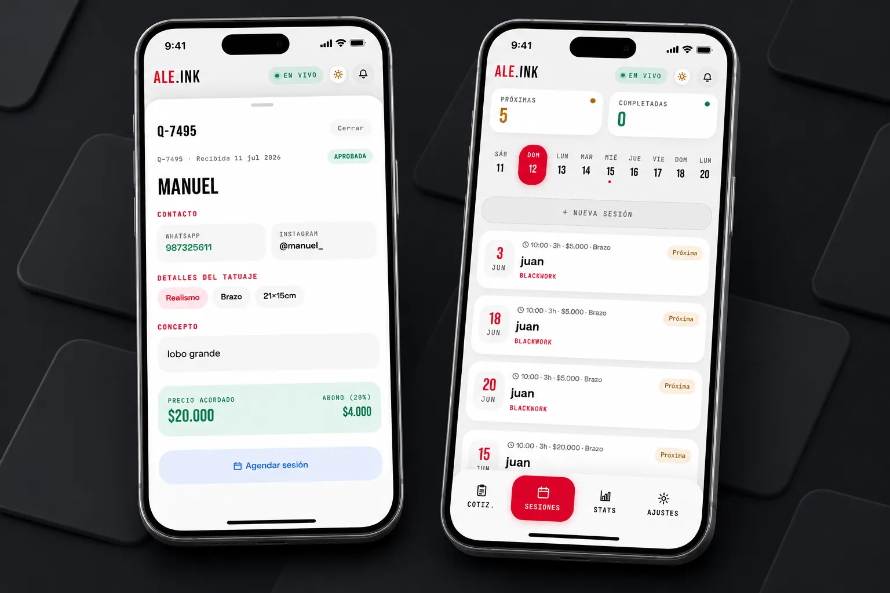
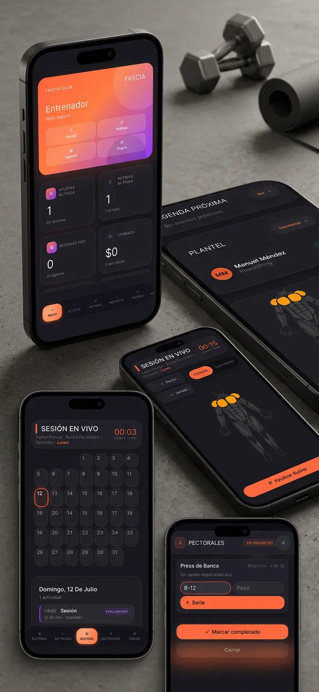

Ale.ink Estudio de tatuajes
Sitio web de dos vistas para ALE.INK, un estudio de tatuajes en Viña del Mar. Incluye landing pública con portafolio, cotizador en 5 pasos y Flash Shop, más un panel de artista con gestión de cotizaciones, agenda y estadísticas.
Proyecto Fascia
Sistema de gestión para entrenadores: plantel de atletas, constructor de rutinas con modelo de cuerpo interactivo, sesiones en vivo, rendimiento, calendario, nutrición, pagos y documentos. Es la evolución de GymPrime hacia un sistema completo.
GymPrime
Landing y panel de administración para un gimnasio, con gestión de planes, alumnos y registro de ejercicios. Construido en HTML, CSS y JavaScript puro, usando localStorage como base de datos.
Ale.ink Estudio de tatuajes
Sitio web de dos vistas para ALE.INK, un estudio de tatuajes en Viña del Mar. Incluye landing pública con portafolio, cotizador en 5 pasos y Flash Shop, más un panel de artista con gestión de cotizaciones, agenda y estadísticas.

1 / 4Problema, solución y resultado.
El problema
El cliente necesitaba una presencia digital que reflejara el nivel premium de su trabajo como tatuador, con una forma real de recibir cotizaciones sin depender de DMs en Instagram ni llamadas telefónicas.
La solución
Se desarrolló un sitio de una sola página HTML con dos vistas: una landing pública con portafolio por estilos, Flash Shop interactivo y un cotizador en 5 pasos, y un panel de artista privado con PIN de acceso para gestionar cotizaciones entrantes, agenda semanal y estadísticas del estudio. La comunicación entre vistas se resuelve con localStorage como puente de datos.
El resultado
- Landing pública completa con hero, portafolio, servicios, flash shop, testimonios, precios y cotizador
- Panel de artista con 4 módulos: cotizaciones, agenda, estadísticas y configuración
- Sistema de cotización en 5 pasos con estimación instantánea y resumen antes de enviar
- Arquitectura sin backend: todo corre en el navegador con localStorage como base de datos (etapa de prototipo)
Qué demuestra
- Diseño orientado a la identidad de marca
- Desarrollo de interfaces complejas en vanilla JS sin frameworks
- Arquitectura de datos client-side con localStorage como puente entre vistas
- UX/UI con cursor personalizado, animaciones reveal y mosaico responsive
- Capacidad de construir un producto completo end-to-end para un cliente real
Qué hace.
Landing pública
Hero con video de fondo, estadísticas animadas, call-to-action y navegación sticky.
Portafolio por estilos
Mosaico CSS filtrable con 8 piezas organizadas en 6 categorías: Blackwork, Realismo, Fine Line, Geométrico, Traditional, Acuarela.
Flash Shop
Mini e-commerce por estilos con 12 diseños, estados disponible/vendido, precio y sistema de reserva integrado al cotizador.
Cotizador (5 pasos)
Flujo guiado: selección de estilo → medidas y zona del cuerpo → descripción del concepto → referencias visuales → datos de contacto. Genera resumen instantáneo.
Panel de artista
Vista privada con acceso por PIN. Módulos de cotizaciones entrantes (con filtros y exportación CSV), agenda semanal, estadísticas del estudio y configuración.
Cómo se construyó.
Definición de arquitectura
Se planteó un sistema de dos vistas dentro de un único archivo HTML, usando localStorage como puente de datos entre la vista pública y el panel de artista. Sin backend ni framework.
Diseño del sistema visual
Se construyó un sistema de tokens CSS (variables) basado en la identidad del cliente: fondo #080808, acento rojo #ff003c, tipografía mixta display/cuerpo/mono. Cursor personalizado, animaciones con IntersectionObserver.
Desarrollo de módulos
Se implementaron los módulos de forma iterativa: primero la landing (hero, about, galería, servicios), luego el Flash Shop con tabs por estilo, después el wizard de cotización en 5 pasos, y finalmente el panel de artista.
Iteración de contraste y UX
Se realizaron múltiples revisiones de contraste para cumplir AA, correcciones de legibilidad en labels, fixes de navegación mobile y limpieza de datos de prueba.
Tecnologías usadas.
Ideas para seguir probando.
Backend real con Firebase o Supabase
Reemplazar localStorage por una base de datos en la nube para sincronizar cotizaciones entre dispositivos y acceder al panel desde cualquier lugar.
Notificaciones WhatsApp automáticas
Integrar la API de WhatsApp Business para enviar confirmación al cliente y alerta al artista cuando llega una cotización nueva.
Autenticación segura del panel
Reemplazar el PIN simple por un sistema de login con JWT para proteger el panel de artista de manera real.
Galería dinámica desde CMS
Conectar el portafolio a un CMS headless o panel propio para que el artista pueda agregar piezas sin tocar código.
Proyecto Fascia
Sistema de gestión para entrenadores: plantel de atletas, constructor de rutinas con modelo de cuerpo interactivo, sesiones en vivo, rendimiento, calendario, nutrición, pagos y documentos. Es la evolución de GymPrime hacia un sistema completo.

1 / 7Problema, solución y resultado.
El problema
GymPrime resolvía lo básico de un gimnasio (planes, alumnos, cupos), pero un entrenador real necesita mucho más: armar rutinas personalizadas por grupo muscular, hacer seguimiento de sesiones en tiempo real, registrar rendimiento, manejar pagos y documentos de cada atleta.
La solución
Un sistema con 9 módulos: Dashboard general, Plantel de atletas, Constructor de rutinas con un modelo de cuerpo humano interactivo (se toca cada músculo para asignarle ejercicios, día por día), Sesión en vivo con cronómetro para registrar series mientras se entrena, Rendimiento, Calendario, Nutrición, Pagos y Documentos. Por ahora corre completo en el navegador con localStorage, como continuación directa de GymPrime, con la meta de convertirlo en una app web o nativa real.
El resultado
- 9 módulos funcionales construidos sobre la base de GymPrime
- Constructor de rutinas visual mediante modelo de cuerpo interactivo
- Modo de sesión en vivo con cronómetro y registro en tiempo real
- Aún en desarrollo, con prototipo activo en GitHub Pages
Qué demuestra
- Integración de una librería externa (React + react-muscle-highlighter) sin proceso de build
- Diseño de un sistema multi-módulo con estado centralizado
- Construcción de una interfaz interactiva basada en un modelo anatómico
- Evolución iterativa de un proyecto propio (GymPrime → Fascia)
Qué hace.
Dashboard
Resumen general con estadísticas, deportes activos, agenda y plantel.
Plantel de atletas
Listado de atletas en vista grilla o lista, con búsqueda y filtro por deporte y estado.
Constructor de rutinas
Modelo de cuerpo interactivo (frontal y posterior): se activa un día de la semana y se toca cada músculo para asignarle ejercicios.
Sesión en vivo
Modo de entrenamiento en tiempo real con cronómetro, usando el mismo modelo de cuerpo para registrar series completadas.
Rendimiento
Registro y seguimiento de métricas de cada atleta.
Calendario, nutrición, pagos y documentos
Módulos de gestión general para cada atleta: eventos, planes alimenticios, cobros y documentos asociados.
Cómo se construyó.
Punto de partida: GymPrime
Se tomó como base la lógica de gestión de alumnos y planes ya validada en GymPrime, para no partir de cero.
Diseño de los módulos
Se definieron los 9 módulos necesarios para cubrir el trabajo real de un entrenador: plantel, rutinas, sesiones, rendimiento, calendario, nutrición, pagos y documentos.
Constructor de rutinas con modelo de cuerpo
Se integró la librería react-muscle-highlighter sobre React 18, cargada directamente desde CDN sin proceso de build, para representar el cuerpo humano de forma clickeable.
Modo sesión en vivo
Se reutilizó el mismo modelo de cuerpo del constructor, pero conectado a un cronómetro y al registro de series completadas en tiempo real durante el entrenamiento.
Tecnologías usadas.
Ideas para seguir probando.
Backend real con base de datos
Migrar de localStorage a un servidor con base de datos, para que los datos no dependan de un solo navegador.
App web o nativa
Convertir el sistema en una aplicación instalable, ya sea web (PWA) o nativa para celular.
Publicación para uso real
Llevar el sistema a un estado estable para que un entrenador lo use en el día a día, como ya ocurre con GymPrime.
Multi-usuario y roles
Permitir que distintos entrenadores gestionen sus propios atletas dentro del mismo sistema.
GymPrime
Landing y panel de administración para un gimnasio, con gestión de planes, alumnos y registro de ejercicios. Construido en HTML, CSS y JavaScript puro, usando localStorage como base de datos.
 1 / 4
1 / 4
Problema, solución y resultado.
El problema
Un gimnasio necesitaba una forma simple de llevar el control de sus planes, alumnos inscritos y cupos disponibles, sin depender de planillas sueltas o anotaciones manuales.
La solución
Un sitio con landing pública y un panel de administración aparte: la landing muestra los planes disponibles y permite inscribir alumnos directamente, mientras que el dashboard centraliza la gestión completa — planes, alumnos y un sistema de ejercicios con registro de peso por alumno. Los datos se guardan en el navegador con localStorage, sin necesidad de un servidor o base de datos externa.
El resultado
- En uso activo por el entrenador del gimnasio desde su implementación
- Reemplazo de planillas y anotaciones manuales por un sistema centralizado
- Visibilidad inmediata de cupos disponibles por plan
- Registro histórico de peso por alumno en cada ejercicio
Qué demuestra
- Manejo de localStorage como base de datos del lado del cliente
- Cálculo dinámico de cupos restantes por plan
- Construcción de modales y formularios propios sin librerías externas
- Organización de una landing pública separada de un panel administrativo
Qué hace.
Landing pública
Muestra métricas generales y la lista de planes disponibles, con la opción de inscribir un alumno directamente desde ahí.
Gestión de planes
Crear, editar y eliminar planes del gimnasio, cada uno con precio, cupos totales y descripción.
Gestión de alumnos
Listado de alumnos inscritos con ver detalle, editar datos (fecha de ingreso, fecha de pago, estado) y eliminar.
Registro de ejercicios
Creación de ejercicios y registro del peso levantado por cada alumno en cada uno, con historial editable.
Cómo se construyó.
Diseño de la landing pública
Se construyó la página principal con las métricas generales y el listado de planes, pensada para que cualquier visitante vea la oferta del gimnasio de forma clara.
Sistema de planes y alumnos
Se implementó la lógica de inscripción: cada plan con cupos limitados, y el cálculo automático de cupos restantes según los alumnos ya inscritos.
Panel de administración
Se separó la gestión en un dashboard aparte, con vistas dedicadas para planes, alumnos inscritos y sus datos de ingreso y pago.
Sistema de ejercicios
Se agregó un módulo adicional para registrar ejercicios y llevar el historial de peso levantado por cada alumno, ampliando el sistema más allá de la gestión administrativa básica.
Tecnologías usadas.
Ideas para seguir probando.
Backend real con base de datos
Migrar de localStorage a una base de datos en servidor, para que los datos no dependan de un solo navegador y se puedan respaldar.
Login con roles
Acceso diferenciado para el entrenador y posibles administradores adicionales.
Notificaciones de vencimiento
Aviso automático cuando se acerca la fecha de pago o vencimiento del plan de un alumno.
Reportes y estadísticas
Gráficos de ingresos, alumnos activos por plan y evolución de peso por ejercicio.
¿Quieres ver más detalles de algún experimento?
Puedo ampliar cualquiera de estos con código, decisiones técnicas o una demo en vivo.